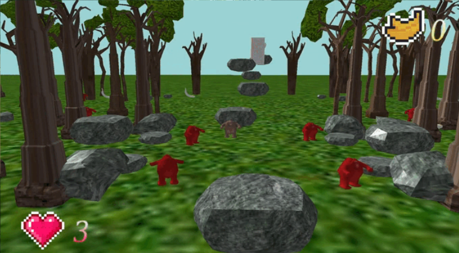

Wildless
Wildless es un videojuego 3D desarrollado en C++ y en el motor propio V3RNI3R Engine en el que el jugador se mete en el papel de un mono en la selva y tiene que completar algunos logros internos del juego para completarlo.
Wildless es un juego de movimiento octodireccional, en el que el jugador puede saltar, trepar y recoger su comida favorita: los plátanos.
Contribuciones
Debido a que el grupo de trabajo estaba formado por 9 personas, mi trabajo consistió en implementar algunos logros del juego, mecánicas básicas, diseño de mallas 3D y desarrollo de componentes dentro del juego. Además, sobre el motor he realizado un poco la estructura básica, la implementación primera de la interfaz y limpieza de basura generada.
Imágenes
